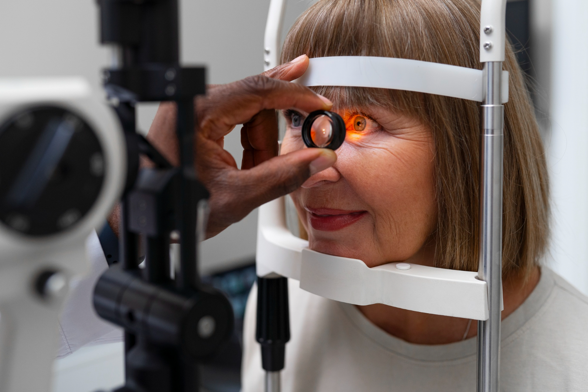

Eyewear in the medical field serves a multifaceted role, encompassing safety, precision, and the overall well-being of healthcare professionals. From protective measures against potential hazards to addressing vision impairments and promoting comfort during long hours of work, the significance of eyewear cannot be overstated.
1. Protective Eyewear:
One of the primary functions of eyewear in the medical field is to provide protection against various occupational hazards. Healthcare professionals, including surgeons, nurses, and laboratory technicians, frequently encounter situations where their eyes are at risk of exposure to potentially harmful substances. In surgical and clinical settings, safety glasses, goggles, and face shields are commonly utilized to shield the eyes from splashes of bodily fluids, chemicals, or infectious materials. These forms of protective eyewear play a crucial role in preventing injuries and ensuring the safety of medical practitioners.
2. Prescription Eyewear:
Clear and accurate vision is fundamental in healthcare, where precision is paramount. Many healthcare professionals wear prescription eyewear to correct refractive errors, such as myopia, hyperopia, or astigmatism. Optimal visual acuity is essential for tasks ranging from reading patient records and administering medications to performing intricate surgical procedures. Prescription eyewear ensures that medical practitioners can carry out their duties with precision, reducing the likelihood of errors and enhancing overall patient care.
3. Specialized Eyewear:
Certain medical specialties necessitate specialized eyewear to address unique challenges and risks. For instance:
Laser Safety Glasses: In procedures involving lasers, such as dermatological or ophthalmic surgeries, laser safety glasses are essential. These glasses protect the eyes from harmful laser radiation, ensuring the safety of both the patient and the healthcare professional.
Radiation Protection Glasses: Professionals working in radiology or interventional procedures where ionizing radiation is present may wear leaded glasses. These glasses provide necessary protection against radiation exposure, safeguarding the eyes from potential long-term damage.
4. Blue Light Protection:
As digital technology becomes increasingly integrated into healthcare practices, healthcare professionals are exposed to prolonged periods of screen time. Eyewear with blue light filters has gained importance to mitigate the potential negative effects of extended exposure to digital screens. These filters reduce eye strain and help maintain visual comfort, particularly in settings where electronic medical records and digital devices are integral to daily tasks.
5. Comfort and Ergonomics:
The comfort of eyewear is a critical consideration, especially in the demanding and often lengthy work hours of healthcare professionals. Lightweight designs, ergonomic features, and adjustable components contribute to the overall well-being of practitioners. Comfortable eyewear ensures that healthcare professionals can focus on patient care without unnecessary distractions or discomfort.
6. Infection Control Measures:
In the context of infection prevention and control, eyewear serves as a crucial component of personal protective equipment (PPE). Particularly in settings where the risk of exposure to infectious agents is high, such as during the treatment of contagious diseases, eyewear forms a barrier against splashes, droplets, or other potential sources of infection. This not only protects the healthcare professional but also contributes to broader efforts in maintaining a safe healthcare environment.
7. Education and Training:
Eyewear is integral to medical education and training programs. Simulation labs and virtual reality applications often incorporate specialized eyewear to provide students with realistic and immersive learning experiences. These educational tools help prepare future healthcare professionals for diverse clinical scenarios, allowing them to practice skills and procedures in a controlled environment.
In conclusion, eyewear in the medical field is a multifunctional tool that extends far beyond mere correction of vision. It encompasses protective measures, specialized applications, and considerations for comfort, making it an essential component of the healthcare professional's toolkit. As medical practices evolve and technology continues to advance, the role of eyewear in ensuring the safety and effectiveness of healthcare delivery remains pivotal.
GO BACK
Welcome to Eyewear
Eyewear in the Medical Field: A Comprehensive Overview
Eyewear in the medical field serves a multifaceted role, encompassing safety, precision, and the overall well-being of healthcare professionals. From protective measures against potential hazards to addressing vision impairments and promoting comfort during long hours of work, the significance of eyewear cannot be overstated.
1. Protective Eyewear:
One of the primary functions of eyewear in the medical field is to provide protection against various occupational hazards. Healthcare professionals, including surgeons, nurses, and laboratory technicians, frequently encounter situations where their eyes are at risk of exposure to potentially harmful substances. In surgical and clinical settings, safety glasses, goggles, and face shields are commonly utilized to shield the eyes from splashes of bodily fluids, chemicals, or infectious materials. These forms of protective eyewear play a crucial role in preventing injuries and ensuring the safety of medical practitioners.
2. Prescription Eyewear:
Clear and accurate vision is fundamental in healthcare, where precision is paramount. Many healthcare professionals wear prescription eyewear to correct refractive errors, such as myopia, hyperopia, or astigmatism. Optimal visual acuity is essential for tasks ranging from reading patient records and administering medications to performing intricate surgical procedures. Prescription eyewear ensures that medical practitioners can carry out their duties with precision, reducing the likelihood of errors and enhancing overall patient care.
3. Specialized Eyewear:
Certain medical specialties necessitate specialized eyewear to address unique challenges and risks. For instance:
Laser Safety Glasses: In procedures involving lasers, such as dermatological or ophthalmic surgeries, laser safety glasses are essential. These glasses protect the eyes from harmful laser radiation, ensuring the safety of both the patient and the healthcare professional.
Radiation Protection Glasses: Professionals working in radiology or interventional procedures where ionizing radiation is present may wear leaded glasses. These glasses provide necessary protection against radiation exposure, safeguarding the eyes from potential long-term damage.
4. Blue Light Protection:
As digital technology becomes increasingly integrated into healthcare practices, healthcare professionals are exposed to prolonged periods of screen time. Eyewear with blue light filters has gained importance to mitigate the potential negative effects of extended exposure to digital screens. These filters reduce eye strain and help maintain visual comfort, particularly in settings where electronic medical records and digital devices are integral to daily tasks.
5. Comfort and Ergonomics:
The comfort of eyewear is a critical consideration, especially in the demanding and often lengthy work hours of healthcare professionals. Lightweight designs, ergonomic features, and adjustable components contribute to the overall well-being of practitioners. Comfortable eyewear ensures that healthcare professionals can focus on patient care without unnecessary distractions or discomfort.
6. Infection Control Measures:
In the context of infection prevention and control, eyewear serves as a crucial component of personal protective equipment (PPE). Particularly in settings where the risk of exposure to infectious agents is high, such as during the treatment of contagious diseases, eyewear forms a barrier against splashes, droplets, or other potential sources of infection. This not only protects the healthcare professional but also contributes to broader efforts in maintaining a safe healthcare environment.
7. Education and Training:
Eyewear is integral to medical education and training programs. Simulation labs and virtual reality applications often incorporate specialized eyewear to provide students with realistic and immersive learning experiences. These educational tools help prepare future healthcare professionals for diverse clinical scenarios, allowing them to practice skills and procedures in a controlled environment.
In conclusion, eyewear in the medical field is a multifunctional tool that extends far beyond mere correction of vision. It encompasses protective measures, specialized applications, and considerations for comfort, making it an essential component of the healthcare professional's toolkit. As medical practices evolve and technology continues to advance, the role of eyewear in ensuring the safety and effectiveness of healthcare delivery remains pivotal.
Common Eye Diseases and Remedies: A Brief Overview
- Myopia (Nearsightedness): Description: Difficulty seeing distant objects clearly.
- Hyperopia (Farsightedness):
- Astigmatism:
- Presbyopia:
- Cataracts:
- Glaucoma:
- Age-Related Macular Degeneration (AMD):
- Diabetic Retinopathy:
- Conjunctivitis (Pink Eye):
- Dry Eye Syndrome:
- Blepharitis:
Remedies: Prescription glasses or contact lenses to correct vision. Refractive surgery, such as LASIK, may be considered.
Description: Difficulty focusing on close objects.
Remedies: Prescription glasses or contact lenses. Refractive surgery may be an option in some cases.
Description: Blurred or distorted vision due to irregular shape of the cornea or lens.
Remedies: Glasses or contact lenses with cylindrical correction. Refractive surgery may be recommended.
Description: Age-related difficulty in focusing on close objects.
Remedies: Reading glasses or multifocal lenses. In some cases, refractive surgery may be considered.
Description: Clouding of the eye's natural lens.
Remedies: Surgical removal of the cloudy lens and replacement with an artificial lens (intraocular lens).
Description: Increased intraocular pressure damaging the optic nerve.
Remedies: Eye drops, oral medications, laser therapy, or surgery to reduce intraocular pressure.
Description: Degeneration of the macula, leading to central vision loss.
Remedies: Antioxidant supplements, injections into the eye (anti-VEGF therapy), or photodynamic therapy.
Description: Damage to blood vessels in the retina due to diabetes.
Remedies: Control of blood sugar levels, laser therapy, injections, or surgery in advanced cases.
Description: Inflammation of the conjunctiva, causing redness and irritation.
Remedies: Antibiotic or antiviral eye drops (for infectious conjunctivitis), or artificial tears for relief.
Description: Insufficient tear production or poor-quality tears.
Remedies: Artificial tears, prescription medications, lifestyle adjustments, or in severe cases, punctal plugs.
Description: Inflammation of the eyelids, often causing redness and irritation.
Remedies: Warm compresses, eyelid hygiene, antibiotics, or corticosteroid eye drops in severe cases.
GO BACK